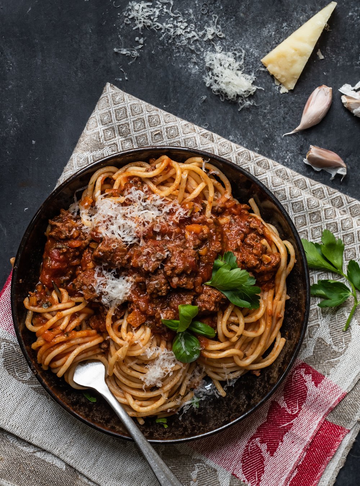

Bolognese

Home
Description
A simple and delicous traditional recipe for bolognese sauce
Ingredients
- 600g Minced Beef
- 2-3 medium/big Carrots
- 3-4 Gloves Garlic
- 1 Fennel
- 2-3 Celery
- 3-5 Shallots
- 200ml Beef broth
- White Wine
- Tomatoe Marc
- 400g Strained Tomatoes
- Olive Oil
- Salt, Pepper and dry Italian Herbs
Steps
- Cut the Carrots, Fennel, Shallots and Garlic Gloves in really small pieces.
- Fry the Minced Beef sharply until the meat is cooked and the pot has a roast set. Put the Meat in a different bowl
- Put the Carrots, Fennel, Shallots with Olive Oil into the pot and steam it at medium heat until its soft. Add more Olive Oil if needed
- Add 2-3 Table Spoons of Tomatoe Marc and stir it.
- Increase the heat and add a Shot of White Wine to extinguish.
- Add the Meat, Strained Tomatoes, Garlic Gloves, Beef Broth and the Italian Herbs into the pot.
- Let it lightly cook on small heat for at least 1 hour.
- Add Salt and Pepper